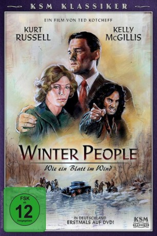
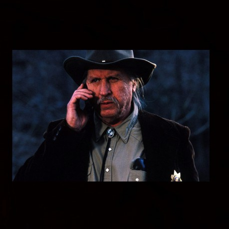

#8974 Winter People - Wie ein Blatt im Wind
Alternativ: Winter People
 
 IMDB-Wertung: 6.3 / 10
IMDB-Wertung: 6.3 / 10  Metascore: 0
Metascore: 0 
Auf der Flucht in eine neue Zukunft gerät der Uhrmacher Wayland Jackson mit seiner Tochter zwischen die Fronten zweier verfeindeter Familien-Clans: den Wrights und den Campbells. Wayland lernt Collie Wright kennen, die allein mit ihrem Baby in einem einsamen Holzhaus lebt. Niemand darf wissen, daß Cole, der wildeste der Campbellsippe, der Vater ihres Kindes ist. Cole dringt immer wieder gewaltsam in Collies Leben ein. Doch er rechnet nicht mit Wayland, der sich in die junge Frau verliebt hat. In einer eiskalten Winternacht kommt es zum Kampf zwischen den beiden Männern. Wenig später wird Cole tot aufgefunden. Ist Wayland der Mörder? Alle Spuren deuten daraufhin, und die Campbells rüsten zum Rachefeldzug. Um ein Gemetzel zu verhindern und den Mann, den sie liebt, zu retten, fasst Collie einen verzweifelten Entschluss: sie will ihr Kind opfern! Werden die rachedürstigen Campbells den Preis annehmen?
Jahr: 1989
Dauer: 106 Minuten
FSK: 12
Land: USA Studio: Columbia PicturesTonspuren: DD2.0 - ,
Untertitel:
Auflösung: 1080p (1920x824) Größe: 4761 MB
Genre: Drama
Regisseur: Ted Kotcheff
Drehbuch: John Ehle
Soundtrack: John Scott
Darsteller:
 Kurt Russell als Wayland Jackson
Kurt Russell als Wayland Jackson Kelly McGillis als Collie Wright
Kelly McGillis als Collie Wright Lloyd Bridges als William Wright
Lloyd Bridges als William Wright Mitchell Ryan als Drury Campbell
Mitchell Ryan als Drury Campbell- Jeffrey Meek als Cole Campbell
- Don Michael Paul als Young Wright
-  Lanny Flaherty als Gudger Wright
- Eileen Ryan als Annie Wright
 Gary Bullock als MacGregor
Gary Bullock als MacGregor Rebecca Koon als Bartering Woman
Rebecca Koon als Bartering Woman- Trey Lindsay als Campbell Family Son
- Amelia Burnette als Paula Jackson
 David Dwyer als Milton Wright
David Dwyer als Milton Wright- Bill Gribble als Skeet Campbell
- Wallace Merck als Harmon Campbell
- Walter Averitt als Margaret Campbell
- Dashiell Coleman als Jonathan Wright
- Barbara Freeman als Mavis McGregor
- Ivan Green als Mr. Crawford
- Lucile McIntyre als Mrs. Crawford
- Judy Simpson als Gudger's Wife
- James Eric als Bartering Man
- Dick Parkinson als Campbell Man #1
- Stacy Moore als Campbell Man #2
- Robert LeRoux als Dirk Campbell
Datei: X:\1989\Winter People - Wie ein Blatt im Wind (1989, FSK12, 1920x824).mkv seit 16.05.2018
Festplatte: HD 1987-1991
 Es gibt insgesamt 54 Filme in der Gruppe '1989'
Es gibt insgesamt 54 Filme in der Gruppe '1989'